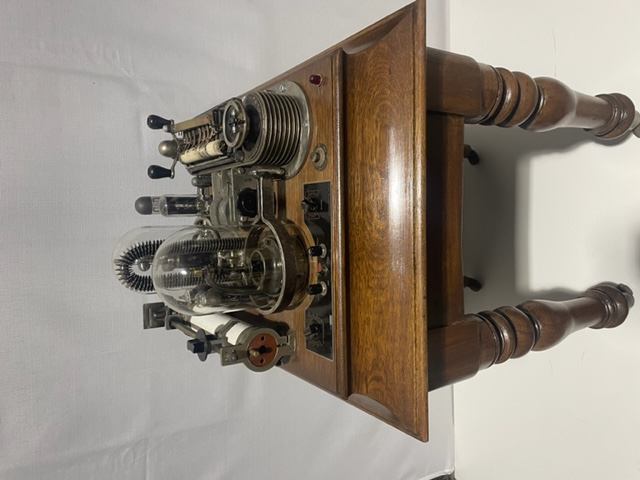
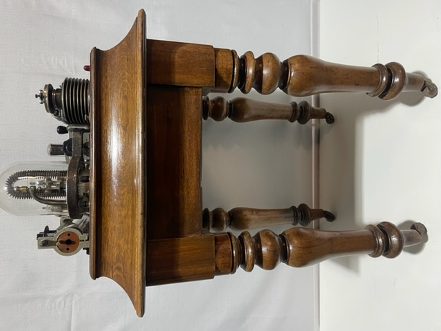
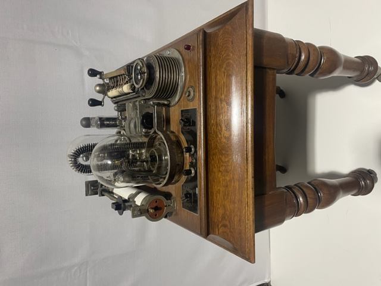
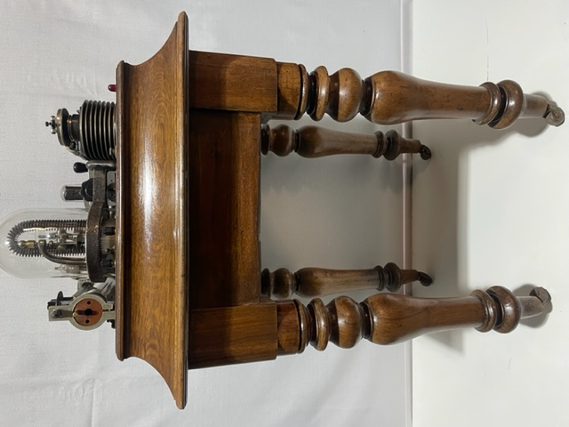

Das Schwachsinn Detektor
2020
H100cm x W60cm x D60cm
Timber, steel, glass & components
$6,000
When Klause Von Strapen created the bullshit detector, his goal was to provide the people with a reliable way to identify credible leaders who would genuinely uphold humanity's values. The device had previously been used in courts of law to great success. He intended for the device to be used for the first time during the 1932 Berlin elections, providing voters with a clearer understanding of their candidate’s intentions. Sadly, the device vanished without a trace and Klause Von Strapen was never seen or heard of again.
×